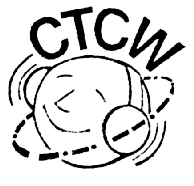

Club for Portuguese speaking CW enthusiasts
The CTCW club is of a group of telegraphy enthusiasts and it has been an official member of the EuCW since January 1, 1993.
OBJECTIVES: - To preserve and to promote the use of telegraphy among amateurs. - To encourage the training of new CW operators. - To spread CW related information. - To organize activities leading to the practice of telegraphy, such as: contests, expeditions, nets, parties... - To use all the frequencies allocated to CW in order to underline their right to exist. - To preserve and to spread the use of the Portuguese Language throughout radio communications (over 180 000 000 speakers all over the world). - To sponsor an international award on a permanent basis, available to those who submit proof of having made CW QSOs with members of the CTCW club. MEMBERS: Licensed portuguese and foreign amateurs who: - Submit proof (proper QSL cards) of having made 3 contacts (CT and EU), of 20 minutes each, in plain Portuguese (no abbreviations) with 3 CTCW members. - Submit proof (proper QSL cards) of having made 2 contacts (DX), of 20 minutes each, in plain Portuguese (no abbreviations) with 2 CTCW members. - Fill in a declaration stating that, at least, they will answer all the received QSL cards. - Purchase the CTCW rubber stamp - this is when full membership will be granted. CTCW members must: - observe all the rules of amateur radio and develop their operating skills; - avoid the use of CW encoders and decoders; - keep the love for CW alive; - be active on the bands and nominate other operators for club membership; - adjust their sending speed to the one of the slowest operator in QSO; - mark their QSL cards with the rubber stamp of the club; - watch over the good name of the club and be a part of its reputation. BOARD OF DIRECTORS: - 1 National Manager - 1 International Manager/ECM CT1BQH - 1 Secretary